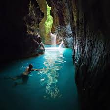

Kabutongan Falls, Cebu
Kabutongan Falls: A Tranquil Oasis in Cebu
Kabutongan Falls is a stunning multi-tiered waterfall in Alegria, Cebu, known for its pristine beauty and calm atmosphere. The falls feature several cascading tiers, each surrounded by lush greenery, with cool, clear waters flowing into inviting natural pools below. The peaceful environment and the cool mist from the cascading water make it a perfect destination for swimming, relaxation, and nature walks.
Visitors can enjoy a refreshing dip in the pools or explore the surrounding forest trails, which lead to different parts of the waterfall. The area around Kabutongan Falls remains relatively untouched by mass tourism, allowing for a quiet and intimate experience in nature.
The trek to Kabutongan Falls is an adventure in itself, with travelers passing through scenic paths, rocky terrain, and local vegetation. Upon arrival, the breathtaking sight of the multi-tiered waterfalls is a rewarding experience that makes the journey worthwhile.
---
Highlights of Kabutongan Falls:
1. *Multi-Tiered Waterfall*: Kabutongan Falls features several beautiful cascading tiers of water, each surrounded by lush greenery, creating a picturesque scene for visitors.
2. *Natural Swimming Pools*: The clear, cool waters at the base of the falls provide a perfect spot for swimming and relaxation, making it a great place to unwind and enjoy the beauty of nature.
3. *Scenic Hiking Trails*: The journey to the falls involves an exciting trek through the forest, rocky paths, and small streams, offering an immersive experience in nature.
4. *Peaceful Atmosphere*: The secluded location of Kabutongan Falls makes it an ideal spot for those looking for a quiet escape, away from the crowds and noise of tourist-heavy areas.
5. *Photographic Beauty*: With its lush surroundings, multiple tiers, and clear waters, Kabutongan Falls is a photographer's dream, offering numerous opportunities for stunning photos.
6. *Untouched by Mass Tourism*: Kabutongan Falls is not as heavily commercialized as other attractions, ensuring a more peaceful and natural experience for visitors.
Kabutongan Falls is a must-see destination for nature enthusiasts, photographers, and anyone looking to experience the peaceful side of Cebu. Whether you're hiking through the forest or swimming in the crystal-clear waters, Kabutongan Falls provides an unforgettable experience amidst the beauty of nature.